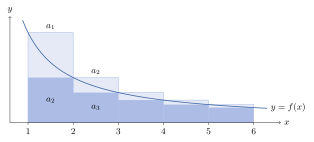
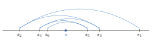

Chapter 10. Series of Real Numbers
An infinite series is a sum with infinitely many terms. Such a sum has no meaning until one is given, and the meaning is a limit. Add the first \(n\) terms, then let \(n\to\infty\). So this chapter is really about a special kind of sequence, and the tools of Chapter 3 do most of the work.
Section 10.1 gives the definition and the two kinds of series whose sums are easy to find. Section 10.2 proves the standard convergence tests. They decide whether a series converges without finding its sum. Section 10.3 separates series that converge because their terms are small from series that converge because their terms cancel. The difference matters. Reordering the terms of a series of the second kind can change its sum to any real number at all.
10.1 Types of Series
Definition 10.1.1. Let \(\{a_n\}_{n=1}^\infty\) be a sequence of real numbers. Let \(\{s_n\}_{n=1}^\infty\) be the sequence obtained from \(\{a_n\}\), where for each \(n\in\mathbb{N}\), \(s_n=\sum^n_{k=1}a_k\). The sequence \(\{s_n\}\) is called an infinite series and is denoted \(\sum^\infty_{k=1} a_k\), \(\sum a_k\), or \(a_1+a_2+\cdots\). For each \(n\in\mathbb{N}\), \(s_n\) is called the \(n\)th partial sum of the series and \(a_n\) is called the \(n\)th term of the series.
The series \(\sum a_k\) converges if the sequence \(\{s_n\}\) converges. If \(s_n\to s\), then \(s\) is called the sum of the series, written \(\sum a_k=s\). If the sequence \(\{s_n\}\) diverges, the series \(\sum a_k\) is said to diverge.
Remark 10.1.2. The symbol \(\sum a_k\) stands for two things, the sequence of partial sums and, when it converges, its sum. The context always makes clear which one is meant. A series can also start at an index other than \(1\). For example, \(\sum_{k=0}^\infty a_k\) has partial sums \(s_n=\sum_{k=0}^na_k\) for \(n\ge0\). Everything in this chapter holds for such series, with the obvious changes.
Example 10.1.3 (Geometric Series).
Consider, for \(|r|<1\), \(\sum_{k=1}^\infty r^k\). Then for \(n\in\mathbb{N}\), \[s_n=r+r^2+r^3+\cdots +r^n.\] Thus \[(1-r)s_n=s_n-rs_n=r-r^{n+1}.\] Therefore, \[s_n=\frac{r-r^{n+1}}{1-r}.\] But since \(|r|<1\), \(r^n\to 0\) by Example 3.1.7. Thus \[\lim_{n\to\infty}s_n=\frac{r}{1-r}.\] Hence \[\sum^\infty_{k=1}r^k=\frac{r}{1-r}.\] Adding the term \(r^0=1\) gives \(\sum_{k=0}^\infty r^k=1+\frac{r}{1-r}=\frac{1}{1-r}\). If \(|r|\ge1\), the geometric series diverges, by Example 10.2.3.
Example 10.1.4 (Telescoping Series).
Consider \(\sum_{k=1}^\infty\left(\frac{1}{k}-\frac{1}{k+1}\right)\). Then \[s_n=\left(1-\frac{1}{2}\right)+\left(\frac{1}{2}-\frac{1}{3}\right)+\cdots+\left(\frac{1}{n}-\frac{1}{n+1}\right)=1-\frac{1}{n+1}.\] Thus \(s_n\to 1\) and \[\sum_{k=1}^\infty\left(\frac{1}{k}-\frac{1}{k+1}\right)=1.\] The partial sums have a simple formula because each term has the form \(b_k-b_{k+1}\), here with \(b_k=\frac1k\). A series of this form is called telescoping. Its partial sums are \(s_n=b_1-b_{n+1}\). So it converges exactly when \(\{b_n\}\) converges, and then its sum is \(b_1-\lim_{n\to\infty}b_n\).
10.2 Convergence Tests
The geometric and telescoping series are rare. For most series there is no formula for \(s_n\). A convergence test decides whether a series converges without finding its sum. This section proves the standard tests. All of them rest on the Cauchy Criterion or on the Monotone Convergence Theorem, applied to the partial sums.
Theorem 10.2.1 (Cauchy Criterion).
The series \(\sum a_k\) converges if and only if for all \(\varepsilon>0\), there exists an \(N\in\mathbb{N}\) such that for all \(m>n\ge N\), \[\left|\sum_{k=n+1}^m a_k\right|<\varepsilon.\]
Proof. (\(\Rightarrow\)) Since the series converges, the sequence of partial sums \(\{s_n\}\) converges. Thus, by Theorem 3.5.2, the sequence of partial sums is Cauchy. Let \(\varepsilon>0\). So there exists an \(N\in\mathbb{N}\) such that for all \(m>n\ge N\), \(|s_m-s_n|<\varepsilon\). But \[\left|\sum_{k=n+1}^m a_k\right|=|s_m-s_n|.\] So for all \(m>n\ge N\), \[\left|\sum_{k=n+1}^m a_k\right|<\varepsilon.\]
(\(\Leftarrow\)) Let \(\varepsilon>0\). Then there exists an \(N\in\mathbb{N}\) such that for all \(m>n\ge N\), \[\left|\sum_{k=n+1}^m a_k\right|=|s_m-s_n|<\varepsilon.\] The same bound holds for \(n>m\ge N\) by symmetry, and it is trivial for \(m=n\). So \(\{s_n\}\) is Cauchy and therefore, by Theorem 3.5.2, \(\{s_n\}\) converges.
∎
Proof Technique (Working with Partial Sums).
A series is a sequence in disguise. It is the sequence \(\{s_n\}\) of its partial sums. So every question about a series is a question about a sequence, and every theorem of Chapter 3 applies. The Cauchy Criterion for series is the Cauchy Criterion for \(\{s_n\}\), rewritten using \(s_m-s_n=\sum_{k=n+1}^ma_k\). When the terms are nonnegative, \(\{s_n\}\) is increasing, and the Monotone Convergence Theorem applies instead (Theorem 10.2.6). Before trying anything clever with a series, write down \(s_n\) and ask what is known about it.
Corollary 10.2.2 (\(n\)th Term Test).
If \(\sum a_k\) converges, then \(a_k\to 0\). If \(a_k\not\to 0\), \(\sum a_k\) diverges.
Proof. See Exercise 10.2.1.
∎
The converse is false. The terms of the harmonic series \(\sum\frac1k\) tend to \(0\), but the series diverges. See Example 10.2.11 and Exercise 10.2.8.
Example 10.2.3. If \(|r|\ge1\), then \(|r^k|=|r|^k\ge1\) for all \(k\in\mathbb{N}\). So \(r^k\not\to0\), and \(\sum r^k\) diverges by the \(n\)th Term Test.
Theorem 10.2.4. If \(\sum a_k=\alpha\) and \(\sum b_k=\beta\), then
\(\sum ca_k=c\alpha\) for all \(c\in\mathbb{R}\); and
\(\sum(a_k+b_k)=\alpha+\beta\).
Proof.
Exercise. See Exercise 10.2.2.
For each \(n\in\mathbb{N}\), let \(s_n=\sum_{k=1}^n a_k\) and \(t_n=\sum^n_{k=1} b_k\). So \(s_n\to \alpha\) and \(t_n\to\beta\). So \(s_n+t_n\to\alpha+\beta\) by Theorem 3.2.4, implying \(\sum(a_k+b_k)=\alpha+\beta\). Here \(s_n+t_n=\sum_{k=1}^n(a_k+b_k)\) is the \(n\)th partial sum of \(\sum(a_k+b_k)\).
∎
Remark 10.2.5. Changing finitely many terms of a series does not change whether it converges. Suppose \(a_k=b_k\) for all \(k>K\). Then for \(m>n\ge K\), \(\sum_{k=n+1}^ma_k=\sum_{k=n+1}^mb_k\). So the condition in the Cauchy Criterion holds for \(\sum a_k\) exactly when it holds for \(\sum b_k\). The sums can differ, of course. In the same way, deleting the first \(K\) terms of a series does not change whether it converges. So a hypothesis such as “\(a_k\ge0\)” in the tests below only needs to hold for all \(k\ge K\), for some \(K\in\mathbb{N}\).
Theorem 10.2.6. Suppose \(a_k\ge0\) for all \(k\in\mathbb{N}\). Then \(\sum a_k\) converges if and only if its partial sums are bounded. If the series converges, then \(s_n\le\sum_{k=1}^\infty a_k\) for all \(n\in\mathbb{N}\). If it diverges, then \(s_n\to\infty\).
Proof.
Since \(s_{n+1}-s_n=a_{n+1}\ge0\), the sequence \(\{s_n\}\) is increasing. By the Monotone Convergence Theorem (Theorem 3.2.13), it converges if and only if it is bounded. If it converges to \(s\), then \(s=\sup\{s_n:n\in\mathbb{N}\}\), by the proof of Theorem 3.2.13. So \(s_n\le s\) for all \(n\). If it diverges, it is not bounded above. So for each \(M>0\) there is an \(N\in\mathbb{N}\) with \(s_N>M\). Since \(\{s_n\}\) is increasing, \(s_n>M\) for all \(n\ge N\). So \(s_n\to\infty\).
∎
Theorem 10.2.7 (Comparison Test).
Suppose \(\sum a_k\) and \(\sum b_k\) are two given series of nonnegative real numbers satisfying \(0\le a_k\le M b_k\) for some positive constant \(M\) and all integers \(k\ge K\) for some fixed \(K\in\mathbb{N}\).
If \(\sum b_k\) converges, then \(\sum a_k\) converges.
If \(\sum a_k\) diverges, then \(\sum b_k\) diverges.
Proof.
For all \(m>n\ge K\), \[0\le \sum_{k=n+1}^m a_k\le M\sum_{k=n+1}^m b_k.\] Then by the Cauchy Criterion, if \(\sum b_k\) converges, \(\sum a_k\) converges. In detail, let \(\varepsilon>0\). Since \(\sum b_k\) converges, there is an \(N\ge K\) such that \(\sum_{k=n+1}^mb_k<\frac{\varepsilon}{M}\) for all \(m>n\ge N\). Then \(\sum_{k=n+1}^ma_k<\varepsilon\) for all \(m>n\ge N\).
This statement is the contrapositive of (1).
∎
Corollary 10.2.8 (Limit Comparison Test).
Suppose \(\sum a_k\) and \(\sum b_k\) are two given series of positive real numbers.
If \(\lim_{k\to\infty}\frac{a_k}{b_k}=L\) with \(0<L<\infty\), then \(\sum a_k\) converges if and only if \(\sum b_k\) converges.
If \(\lim_{k\to\infty}\frac{a_k}{b_k}=0\) and \(\sum b_k\) converges, then \(\sum a_k\) converges.
Proof. See Exercise 10.2.3.
∎
Example 10.2.9. Consider \(\sum^\infty_{k=1}\frac{k}{3^k}\). Notice \(\lim_{k\to\infty}k\left(\frac{2}{3}\right)^k=0\). To see this, use the Binomial Theorem (Exercise 9.3.3). For \(k\ge2\), \[\left(\frac32\right)^k=\left(1+\frac12\right)^k\ge\binom{k}{2}\frac14=\frac{k(k-1)}{8}.\] So \(0<k\left(\frac23\right)^k\le\frac{8}{k-1}\), and the Squeeze Theorem applies. So there exists a \(K\in\mathbb{N}\) such that \(k\left(\frac{2}{3}\right)^k<1\) for all \(k\ge K\). Thus \[\frac{k}{3^k}=k\left(\frac23\right)^k\frac{1}{2^k}\le \frac{1}{2^k}\] for all \(k\ge K\). Thus, by the Comparison Test, since \(\sum^\infty_{k=1}\frac{1}{2^k}\) converges, \(\sum^\infty_{k=1}\frac{k}{3^k}\) converges.
Theorem 10.2.10 (Integral Test).
Let \(\{a_k\}\) be a decreasing sequence of nonnegative real numbers, and let \(f:[1,\infty)\to\mathbb{R}\) be nonnegative and decreasing with \(f(k)=a_k\) for all \(k\in\mathbb{N}\). Then \(\sum a_k\) converges if and only if \(\int^\infty_1 f\) converges.
Proof. Since \(f\) is monotone on \([1,\infty)\), then by Theorem 9.2.2, \(f\in\mathcal{R}_{\mathrm{loc}}[1,\infty)\). Let \(n\in\mathbb{N}\), \(n\ge 2\), and consider the partition \(\mathcal{P}=\{1,2,\dots,n\}\) of \([1,n]\). Since \(f\) is decreasing, for each \(k=2,3,\dots,n\), \(M_k=a_{k-1}\) and \(m_k=a_k\). Here \(M_k\) and \(m_k\) are the supremum and infimum of \(f\) on \([k-1,k]\), and \(\Delta x_k=1\). Thus \[\begin{aligned} \sum^n_{k=2}a_k&=\mathcal{L}(\mathcal{P},f)\\ &\le \int^n_1 f\\ &\le \mathcal{U}(\mathcal{P},f)\\ &=\sum^{n-1}_{k=1}a_k. \end{aligned}\] See Figure 10.1.
Let \(F(t)=\int_1^tf\) for \(t\ge1\). Since \(f\ge0\), \(F\) is increasing, by Theorem 9.2.13 and Exercise 9.2.3.
Suppose \(\sum a_k\) converges, and let \(s\) be its sum. Let \(t\ge1\), and choose an integer \(n\ge2\) with \(n\ge t\). Then \(F(t)\le F(n)\le\sum_{k=1}^{n-1}a_k\le s\), by Theorem 10.2.6. So \(F\) is increasing and bounded above on \([1,\infty)\). As in the proof of Theorem 9.7.8, \(\lim_{t\to\infty}F(t)\) exists. So \(\int_1^\infty f\) converges.
Suppose \(\int_1^\infty f\) converges, and let \(I\) be its value. Since \(F\) is increasing, \(F(n)\le F(t)\) for all \(t\ge n\), and letting \(t\to\infty\) gives \(F(n)\le I\). So for all \(n\ge2\), \[s_n=a_1+\sum_{k=2}^na_k\le a_1+F(n)\le a_1+I.\] The partial sums are bounded, so \(\sum a_k\) converges by Theorem 10.2.6.
∎

Example 10.2.11 (\(p\)-series).
Consider the \(p\)-series \(\sum^\infty_{k=1}\frac{1}{k^p}\). If \(p\le0\), then \(\frac{1}{k^p}\ge1\) for all \(k\in\mathbb{N}\), so the series diverges by the \(n\)th Term Test. If \(p>0\), then \(f(x)=\frac{1}{x^p}\) is nonnegative and decreasing on \([1,\infty)\). By the \(p\)-Test (Theorem 9.7.7), \(\int^\infty_1 \frac{1}{x^p}\,dx\) converges if and only if \(p>1\). So by the Integral Test, \(\sum^\infty_{k=1}\frac{1}{k^p}\) converges if and only if \(p>1\). The case \(p=1\) shows that the harmonic series \(\sum\frac1k\) diverges.
Theorem 10.2.12 (Ratio Test).
Let \(\sum a_k\) be a series of positive terms and let \[R=\limsup\frac{a_{k+1}}{a_k}\quad\text{and}\quad r=\liminf\frac{a_{k+1}}{a_k}.\]
If \(R<1\), then \(\sum a_k\) converges.
If \(r>1\), then \(\sum a_k\) diverges.
If \(r\le 1\le R\), the test is inconclusive.
Proof.
Choose \(c\in(R,1)\). Then there exists a \(K\in\mathbb{N}\) such that for all \(k\ge K\), \(\frac{a_{k+1}}{a_k}\le c\) by Theorem 3.6.11 with \(\varepsilon=c-R\). In particular, \(a_{K+1}\le ca_K\). Also, \(a_{K+2}\le ca_{K+1}\le c^2a_K\). By induction, \(a_{K+m}\le c^m a_K\) for all \(m\ge0\). Therefore, \(a_k\le Mc^k\) for all \(k\ge K\), where \(k=K+m\) and \(M=\frac{a_K}{c^K}\). Thus, since \(0<c<1\), \(\sum c^k\) converges, and hence, by the Comparison Test, \(\sum a_k\) converges.
Now choose \(c\in(1,r)\). Then, using a similar argument to above, there exists a \(K\in\mathbb{N}\) such that \(a_k\ge Mc^k\) for some constant \(M\) and for all \(k\ge K\). If \(r<\infty\), the \(K\) comes from Theorem 3.6.11 with \(\varepsilon=r-c\). If \(r=\infty\), it comes from Theorem 3.6.12. The constant is \(M=\frac{a_K}{c^K}>0\). Since \(c>1\), \(\sum c^k\) diverges, and thus by the Comparison Test, \(\sum a_k\) diverges.
Notice for \(a_k=\frac{1}{k}\), \(r=R=1\), but \(\sum\frac{1}{k}\) diverges. Also, for \(a_k=\frac{1}{k^2}\), \(r=R=1\), but \(\sum\frac{1}{k^2}\) converges. Thus the test is inconclusive if \(r\le 1\le R\). Both facts about these series come from Example 10.2.11.
∎
Often the ratios \(\frac{a_{k+1}}{a_k}\) have a limit \(L\). Then \(R=r=L\) by Corollary 3.6.14. So the series converges if \(L<1\) and diverges if \(L>1\). The test says nothing if \(L=1\).
Theorem 10.2.13 (Root Test).
Let \(\sum a_k\) be a series of nonnegative terms, and let \[\alpha=\limsup \sqrt[k]{a_k}.\] (Here \(\sqrt[k]{0}=0\).)
If \(\alpha<1\), \(\sum a_k\) converges.
If \(\alpha>1\), \(\sum a_k\) diverges.
If \(\alpha=1\), the test is inconclusive.
Proof.
Choose \(c\in(\alpha,1)\). Then there exists a \(K\in\mathbb{N}\) such that \(\sqrt[k]{a_k}<c\) for all \(k\ge K\) by Theorem 3.6.11 with \(\varepsilon=c-\alpha\). But then \(a_k\le c^k\) for all \(k\ge K\). Thus \(\sum a_k\) converges by the Comparison Test and Example 10.1.3.
Notice \(\sqrt[k]{a_k}>1\) for infinitely many \(k\). If \(\alpha<\infty\), this follows from Theorem 3.6.11 with \(\varepsilon=\alpha-1\). If \(\alpha=\infty\), it holds because \(\infty\) is a cluster point of \(\{\sqrt[k]{a_k}\}\), by Theorem 3.6.12. So \(a_k>1\) for infinitely many \(k\). Thus \(a_k\not\to0\). So \(\sum a_k\) diverges by the \(n\)th Term Test.
Exercise. See Exercise 10.2.4.
∎
Proof Technique (Choosing a Number in Between).
The Ratio and Root Tests compare a series with a geometric series. The hypothesis \(R<1\) does not say \(\frac{a_{k+1}}{a_k}\le R\) for large \(k\). It says the ratios are eventually below every number bigger than \(R\). So the proof chooses a number \(c\) strictly between \(R\) and \(1\). Then \(\frac{a_{k+1}}{a_k}\le c\) for all large \(k\), and \(c<1\) makes \(\sum c^k\) converge. Choosing \(c=R\) fails, because the ratios may stay above \(R\) forever. Choosing \(c=1\) fails too, because \(\sum 1\) diverges. Whenever a strict inequality like \(R<1\) has to be used, try putting a number strictly between the two sides. Theorem 3.6.11 then turns \(R<c\) into a statement about the terms.
Theorem 10.2.14 (Abel Partial Summation Formula).
Let \(\{a_k\}\) and \(\{b_k\}\) be sequences of real numbers. Set \(A_0=0\) and \(A_n=\sum^n_{k=1}a_k\) for \(n\ge 1\). Then if \(1\le p\le q\), \[\sum^q_{k=p}a_kb_k=\sum_{k=p}^{q-1}A_k(b_k-b_{k+1})+A_qb_q-A_{p-1}b_p.\]
Proof.
Since \(a_k=A_k-A_{k-1}\) for every \(k\ge1\), \[\sum_{k=p}^qa_kb_k=\sum_{k=p}^qA_kb_k-\sum_{k=p}^qA_{k-1}b_k.\] In the second sum on the right, shift the index down by one. It becomes \(\sum_{k=p-1}^{q-1}A_kb_{k+1}\). Now take the term with \(k=q\) out of the first sum, and the term with \(k=p-1\) out of the second. This gives \[\sum_{k=p}^qa_kb_k=\left(\sum_{k=p}^{q-1}A_kb_k+A_qb_q\right)-\left(\sum_{k=p}^{q-1}A_kb_{k+1}+A_{p-1}b_p\right).\] Combining the two sums from \(p\) to \(q-1\) gives the formula.
∎
Proof Technique (Summation by Parts).
Abel’s formula is a discrete version of integration by parts (Theorem 9.6.2). Think of \(A_k\) as an antiderivative of \(a_k\), since \(A_k-A_{k-1}=a_k\). Then \(\sum a_kb_k\) plays the role of \(\int A'g\). The sum \(\sum A_k(b_k-b_{k+1})\) plays the role of \(-\int Ag'\), and \(A_qb_q-A_{p-1}b_p\) is the boundary term. Use the formula when the terms \(a_k\) are hard to control but their partial sums \(A_k\) are easy, and the \(b_k\) change slowly. The Dirichlet Test is the main example. The terms \(\sin k\) do not tend to \(0\), but their partial sums are bounded, as the proof of Theorem 10.2.20 shows.
Theorem 10.2.15 (Dirichlet Test).
Suppose \(\{a_k\}\) and \(\{b_k\}\) are sequences of real numbers such that the partial sums \(A_n=\sum^n_{k=1}a_k\) form a bounded sequence, and \(\{b_k\}\) is a decreasing sequence of nonnegative numbers with \(b_k\to 0\). Then \(\sum a_k b_k\) converges.
Proof.
Choose \(M>0\) with \(|A_n|\le M\) for all \(n\in\mathbb{N}\). This also holds for \(A_0=0\). Let \(\varepsilon>0\). Since \(b_k\to0\), there is an \(N\in\mathbb{N}\) with \(b_N<\frac{\varepsilon}{2M}\). Let \(m>n\ge N\). Apply Abel’s formula with \(p=n+1\) and \(q=m\). Since \(\{b_k\}\) is decreasing, each \(b_k-b_{k+1}\) is nonnegative, and each \(b_k\) is nonnegative. So \[\begin{aligned} \left|\sum_{k=n+1}^ma_kb_k\right| &\le\sum_{k=n+1}^{m-1}|A_k|(b_k-b_{k+1})+|A_m|b_m+|A_n|b_{n+1}\\ &\le M\left(\sum_{k=n+1}^{m-1}(b_k-b_{k+1})+b_m+b_{n+1}\right)\\ &=M\bigl((b_{n+1}-b_m)+b_m+b_{n+1}\bigr)\\ &=2Mb_{n+1}\\ &\le2Mb_N<\varepsilon. \end{aligned}\] The sum in the second line telescopes. By the Cauchy Criterion (Theorem 10.2.1), \(\sum a_kb_k\) converges.
∎
Theorem 10.2.16 (Alternating Series Test).
If \(\{b_k\}\) is a decreasing sequence of nonnegative real numbers with \(b_k\to 0\), then \(\sum (-1)^{k+1}b_k\) converges.
Proof. Let \(a_k=(-1)^{k+1}\). Then \(|A_n|\le 1\) for all \(n\in\mathbb{N}\), and the Dirichlet Test applies. In fact \(A_n=1\) when \(n\) is odd and \(A_n=0\) when \(n\) is even.
∎
Example 10.2.17. The series \(\sum^\infty_{k=1}\frac{(-1)^{k+1}}{2k-1}\) converges. Here \(b_k=\frac{1}{2k-1}\) decreases to \(0\).
Remark 10.2.18. If \(\{b_k\}\) is not decreasing, this test does not work. The conclusion can fail. See Exercise 10.2.6.
The proof of the next theorem shows more than the bound. The partial sums jump back and forth across the sum \(s\), as in Figure 10.2. So stopping after \(n\) terms gives an error no bigger than the first term left out.
Theorem 10.2.19. Consider the series \(\sum (-1)^{k+1}b_k\), where \(\{b_k\}\) is a decreasing sequence of nonnegative real numbers with \(b_k\to 0\). Let \[s_n=\sum^n_{k=1}(-1)^{k+1}b_k\quad\text{and}\quad s=\sum^\infty_{k=1}(-1)^{k+1}b_k.\] Then \(|s-s_n|\le b_{n+1}\) for all \(n\in\mathbb{N}\).
Proof. Consider the sequence \(\{s_{2n}\}\). Since \[s_{2n}=\sum^{2n}_{k=1}(-1)^{k+1}b_k=(b_1-b_2) + \cdots +(b_{2n-1}-b_{2n}),\] and \(b_{k-1}-b_k\ge 0\) for all \(k\ge2\), the sequence \(\{s_{2n}\}\) is increasing. Similarly, \(\{s_{2n+1}\}\) is decreasing. Indeed, \(s_{2n+1}-s_{2n+3}=b_{2n+2}-b_{2n+3}\ge0\). Since \(\{s_n\}\) converges to \(s\), so do the subsequences \(\{s_{2n}\}\) and \(\{s_{2n+1}\}\). Therefore, \(s_{2n}\le s\le s_{2n+1}\) for all \(n\in\mathbb{N}\). (An increasing sequence is at most its limit, and a decreasing sequence is at least its limit, by the proof of Theorem 3.2.13.) So \(s\) lies between \(s_k\) and \(s_{k+1}\) for every \(k\in\mathbb{N}\). For \(k=2n\) this says \(s_{2n}\le s\le s_{2n+1}\), and for \(k=2n+1\) it says \(s_{2n+2}\le s\le s_{2n+1}\). As a consequence, \[|s-s_k|\le |s_{k+1}-s_k|=b_{k+1}\] for all \(k\in\mathbb{N}\).
∎

Theorem 10.2.20 (Trigonometric Series Test).
Suppose \(\{b_k\}\) is a decreasing sequence of real numbers with \(b_k\to 0\). Then
\(\sum b_k\sin kt\) converges for all \(t\in\mathbb{R}\), and
\(\sum b_k\cos kt\) converges for all \(t\in\mathbb{R}\), except perhaps \(t=2p\pi\), \(p\in\mathbb{Z}\).
Proof. Since \(\{b_k\}\) decreases to \(0\), \(b_k\ge0\) for all \(k\).
Set \(A_n=\sum^n_{k=1}\sin kt\). Then, since \[\sin A\sin B=\frac{1}{2}[\cos(A-B)-\cos(A+B)],\] \[\begin{aligned} \sin(t/2)A_n&=\sum^n_{k=1}\sin(t/2)\sin kt\\ &=\frac{1}{2}\sum^n_{k=1}[\cos((k-1/2)t)-\cos((k+1/2)t)]\\ &=\frac{1}{2}[\cos(t/2)-\cos((n+1/2)t)]. \end{aligned}\] So for \(t\ne 2p\pi\), \(p\in\mathbb{Z}\), \[A_n=\frac{\cos(t/2)-\cos((n+1/2)t)}{2\sin(t/2)}.\] Therefore, \[\begin{aligned} |A_n|&\le \frac{|\cos(t/2)|+|\cos((n+1/2)t)|}{2|\sin(t/2)|}\\ &\le\frac{1}{|\sin(t/2)|}, \end{aligned}\] which is finite, provided \(t\ne 2p\pi\), \(p\in\mathbb{Z}\). Therefore, by the Dirichlet Test, the series \(\sum b_k\sin kt\) converges for all \(t\ne 2p\pi\), \(p\in\mathbb{Z}\). If \(t=2p\pi\), \(p\in\mathbb{Z}\), then \(\sin kt=0\) for all \(k\). Thus the series converges.
The proof is similar to the proof of (1) and is therefore omitted. See Exercise 10.2.9. Notice \(\sum b_k\cos kt\) may or may not converge if \(t=2p \pi\), \(p\in\mathbb{Z}\), since \(\cos kt=1\) for \(t=2p\pi\), \(p\in\mathbb{Z}\).
∎
Example 10.2.21. The series \(\sum^\infty_{k=1}\frac{1}{k}\cos kt\) converges for all \(t\ne 2p\pi\), \(p\in\mathbb{Z}\). However, when \(t=2p\pi\), \(p\in\mathbb{Z}\), \(\cos kt=1\) and \(\sum^\infty_{k=1}\frac{1}{k}\) diverges. However, the series \(\sum_{k=1}^\infty\frac{1}{k^2}\cos kt\) converges for all \(t\in\mathbb{R}\). For \(t\ne2p\pi\) this follows from the test. For \(t=2p\pi\) it is the \(p\)-series with \(p=2\).
Exercises
Exercise 10.2.1. Prove Corollary 10.2.2. [Hint]
Exercise 10.2.2. Prove Theorem 10.2.4 (1).
Exercise 10.2.3. Prove Corollary 10.2.8. [Hint]
Exercise 10.2.4. Prove Theorem 10.2.13 (3). [Hint]
Exercise 10.2.5. Prove the sequence \(\left\{\frac{p^k}{k!}\right\}\), \(0<p<\infty\), converges to \(0\). Appeal to the series \(\sum \frac{p^k}{k!}\) and the ratio test.
Exercise 10.2.6. Show by example that the hypothesis of the Alternating Series Test cannot be replaced by \(b_k\geq 0\) and \(\lim_{k\to\infty}b_k=0\); i.e., \(\{b_k\}\) must be decreasing. [Hint]
Exercise 10.2.7. Prove that if \(\sum a_k\) converges and \(\{b_k\}\) is monotone and bounded, then \(\sum a_kb_k\) converges. This is called Abel’s Test. [Hint]
Exercise 10.2.8. Let \(s_n\) be the \(n\)th partial sum of the harmonic series \(\sum\frac1k\). Prove that \(s_{2^n}\ge1+\frac n2\) for all \(n\in\mathbb{N}\). Conclude, without the Integral Test, that the harmonic series diverges. [Hint]
Exercise 10.2.9. Prove Theorem 10.2.20 (2). [Hint]
Exercise 10.2.10. Decide whether each series converges or diverges. Justify each answer.
\(\displaystyle\sum_{k=1}^\infty\frac{k^2}{2^k}\)
\(\displaystyle\sum_{k=1}^\infty\frac{k!}{k^k}\).
\(\displaystyle\sum_{k=2}^\infty\frac{1}{k\ln k}\)
\(\displaystyle\sum_{k=1}^\infty\left(\frac{k}{k+1}\right)^{k^2}\)
\(\displaystyle\sum_{k=1}^\infty\frac{1}{\sqrt{k(k+1)}}\)
\(\displaystyle\sum_{k=1}^\infty\frac{k+1}{k^3+1}\)
\(\displaystyle\sum_{k=2}^\infty\frac{(-1)^k}{\ln k}\)
10.3 Conditional and Absolute Convergence
A series can converge for two different reasons. Its terms can shrink so fast that even their absolute values have a finite sum. Or its positive and negative terms can cancel. This section shows that the first kind of convergence is much better behaved. A series that converges for the first reason can be added up in any order. A series that converges only for the second reason can be reordered to have any sum at all.
Definition 10.3.1. A series \(\sum a_k\) is said to be absolutely convergent if \(\sum |a_k|\) converges. The series is said to be conditionally convergent if it is convergent but not absolutely convergent.
Example 10.3.2. \(\sum^\infty_{k=1}\frac{(-1)^k}{k}\) is conditionally convergent, while \(\sum^\infty_{k=1}\frac{(-1)^k}{k^2}\) is absolutely convergent. The first series is \(-1\) times the series \(\sum\frac{(-1)^{k+1}}{k}\), which converges by the Alternating Series Test. But \(\sum\frac1k\) diverges. The second converges absolutely because \(\sum\frac{1}{k^2}\) converges (Example 10.2.11).
Theorem 10.3.3. If \(\sum a_k\) converges absolutely, \(\sum a_k\) converges and \[\left|\sum a_k\right|\le \sum |a_k|.\]
Proof. Suppose \(\sum|a_k|\) converges. By the Triangle Inequality, for \(1\le p\le q\), \[\left|\sum^q_{k=p} a_k\right|\le \sum^q_{k=p}|a_k|.\] Thus an application of the Cauchy Criterion shows that \(\sum a_k\) converges. Finally, \[\begin{aligned} \left|\sum^\infty_{k=1} a_k\right|&=\lim_{q\to\infty}\left|\sum^q_{k=1} a_k\right|\\ &\le \lim_{q\to\infty}\sum_{k=1}^q |a_k|\\ &= \sum^\infty_{k=1}|a_k|. \end{aligned}\] The first equality holds because \(\bigl||s_q|-|s|\bigr|\le|s_q-s|\), where \(s_q\) is the \(q\)th partial sum and \(s\) is the sum. The inequality holds by Theorem 3.2.7.
∎
Theorem 10.3.4 (Ratio and Root Test).
Let \(\sum a_k\) be a series of real numbers, and let \[\alpha=\limsup\sqrt[k]{|a_k|}.\] Also, if \(a_k\ne 0\) for all \(k\in\mathbb{N}\), let \[R=\limsup\left|\frac{a_{k+1}}{a_k}\right|\quad\text{and}\quad r=\liminf\left|\frac{a_{k+1}}{a_k}\right|.\]
If \(\alpha<1\) or \(R<1\), then \(\sum a_k\) is absolutely convergent.
If \(\alpha>1\) or \(r>1\), then \(\sum a_k\) is divergent.
If \(\alpha=1\) or \(r\le 1\le R\), then the test is inconclusive.
Proof.
Apply the Root Test or the Ratio Test to the series \(\sum|a_k|\).
If \(\alpha>1\), the proof of Theorem 10.2.13 (2) shows that \(|a_k|>1\) for infinitely many \(k\). If \(r>1\), choose \(c\in(1,r)\). As in the proof of Theorem 10.2.12 (2), there is a \(K\in\mathbb{N}\) with \(|a_{k+1}|\ge c|a_k|>|a_k|\) for all \(k\ge K\). So \(|a_k|\ge|a_K|>0\) for all \(k\ge K\). In both cases \(a_k\not\to0\), so \(\sum a_k\) diverges by the \(n\)th Term Test.
The examples in the proof of Theorem 10.2.12 (3) and in Exercise 10.2.4 have positive terms, so they work here too.
∎
Example 10.3.5. Let \(p\) be a polynomial and \(b\in\mathbb{R}\) with \(|b|<1\). Let \(a_k=p(k)b^k\). If \(b=0\) or \(p\) is the zero polynomial, there is nothing to prove. Otherwise \(p\) has finitely many roots, so there is a \(K\in\mathbb{N}\) with \(p(k)\ne0\) for all \(k\ge K\). By Remark 10.2.5, it is enough to study \(\sum_{k=K}^\infty a_k\). If \(p\) has degree \(d\), dividing the numerator and denominator of \(\frac{p(k+1)}{p(k)}\) by \(k^d\) shows that this ratio tends to \(1\). Then, since \[\left|\frac{a_{k+1}}{a_k}\right|=|b|\left|\frac{p(k+1)}{p(k)}\right|\to |b|<1,\] the series \(\sum p(k)b^k\) is absolutely convergent.
Definition 10.3.6. A series \(\sum a_k'\) is a rearrangement of the series \(\sum a_k\) if there exists a bijection \(j:\mathbb{N}\to \mathbb{N}\) such that \(a_k'=a_{j(k)}\) for all \(k\in\mathbb{N}\).
Example 10.3.7.
The alternating harmonic series \[\sum_{k=1}^\infty\frac{(-1)^{k+1}}{k}=1-\frac{1}{2}+\frac{1}{3}-\frac{1}{4}+\frac{1}{5}-\cdots\] converges, but not absolutely. Let \(s\) be its sum. Now rearrange it so that two positive terms come before each negative term, \[1+\frac{1}{3}-\frac{1}{2}+\frac{1}{5}+\frac{1}{7}-\frac{1}{4}+\frac{1}{9}+\frac{1}{11}-\frac{1}{6}+\cdots.\] Every term of the original series appears exactly once. This rearranged series also converges, but its sum is different.
First, \(s<\frac56\). Let \(s_n\) be the \(n\)th partial sum of the original series. The proof of Theorem 10.2.19 shows that \(s\le s_{2n+1}\) for all \(n\). Also \(s_{2n+1}-s_{2n+3}=\frac{1}{2n+2}-\frac{1}{2n+3}>0\). So \[s\le s_5<s_3=1-\frac12+\frac13=\frac56.\]
Next, let \(s_n'\) be the \(n\)th partial sum of the rearranged series. Its terms come in groups of three, and the \(k\)th group is \[\frac{1}{4k-3}+\frac{1}{4k-1}-\frac{1}{2k}=\frac{8k-3}{2k(4k-1)(4k-3)}.\] So \(s_{3n}'\) is the sum of the first \(n\) groups. Each group is positive, so \(s_3'<s_6'<s_9'<\cdots\). Since \(4k-1\ge3k\) and \(4k-3\ge k\) for \(k\ge1\), each group is at most \(\frac{8k}{2k\cdot3k\cdot k}=\frac{4}{3k^2}\). So the series of groups converges, by the Comparison Test and Example 10.2.11. Let \(s'\) be its sum, so \(s_{3n}'\to s'\). Since \(\{s_{3n}'\}\) is strictly increasing, \(s'\ge s_6'>s_3'=1+\frac13-\frac12=\frac56\).
The other partial sums also tend to \(s'\), since \[s_{3n+1}'=s_{3n}'+\frac{1}{4n+1}\quad\text{and}\quad s_{3n+2}'=s_{3n}'+\frac{1}{4n+1}+\frac{1}{4n+3}.\] In detail, let \(\varepsilon>0\). Choose \(N\in\mathbb{N}\) such that \(|s_{3n}'-s'|<\frac\varepsilon 2\) and \(\frac{2}{4n+1}<\frac\varepsilon 2\) for all \(n\ge N\). Every \(m\ge3N\) has the form \(3n\), \(3n+1\) or \(3n+2\) with \(n\ge N\). So \(|s_m'-s'|\le|s_{3n}'-s'|+\frac{2}{4n+1}<\varepsilon\). Thus the rearranged series converges to \(s'\).
Since \(s<\frac56<s'\), rearranging the terms changed the sum.
Theorem 10.3.8. If the series \(\sum a_k\) converges absolutely, then every rearrangement of \(\sum a_k\) converges to the same sum.
Proof.
Let \(\sum a_k'\) be a rearrangement of \(\sum a_k\), with \(a_k'=a_{j(k)}\) for a bijection \(j:\mathbb{N}\to\mathbb{N}\). Let \(s_n\) and \(s_n'\) be the \(n\)th partial sums of the two series, and let \(s=\sum_{k=1}^\infty a_k\). Let \(\varepsilon>0\). Since \(s_n\to s\), and by the Cauchy Criterion for \(\sum|a_k|\), there is an \(N\in\mathbb{N}\) such that \(|s_N-s|<\frac\varepsilon 2\) and \[\sum_{i=N+1}^m|a_i|<\frac\varepsilon 2\quad\text{for all }m>N.\] Since \(j\) is onto, each of \(1,2,\dots,N\) is \(j(k)\) for some \(k\). Let \(P\) be the largest of these \(N\) values of \(k\). Let \(n\ge P\), and let \(J_n=\{j(1),j(2),\dots,j(n)\}\). Then \(\{1,2,\dots,N\}\subset J_n\). Since \(j\) is one-to-one, the indices in \(J_n\) are distinct. So the terms \(a_1,a_2,\dots,a_N\) cancel in the difference, and \[s_n'-s_N=\sum_{k=1}^na_{j(k)}-\sum_{i=1}^Na_i=\sum_{i\in J_n,\ i>N}a_i.\] If no index in \(J_n\) is larger than \(N\), this sum is \(0\). Otherwise let \(m\) be the largest index in \(J_n\). Then every index in the sum lies between \(N+1\) and \(m\), so \[|s_n'-s_N|\le\sum_{i=N+1}^m|a_i|<\frac\varepsilon 2.\] In both cases, \(|s_n'-s|\le|s_n'-s_N|+|s_N-s|<\varepsilon\) for all \(n\ge P\). So \(s_n'\to s\).
∎
The next theorem is due to Riemann. It says that Theorem 10.3.8 fails as badly as possible for conditionally convergent series. The idea of the proof is simple. Add positive terms until the total passes \(\alpha\). Then add negative terms until it drops below \(\alpha\). Repeat forever. The overshoots shrink because the terms tend to \(0\).
Theorem 10.3.9 (Riemann Rearrangement Theorem).
Let \(\sum a_k\) be a conditionally convergent series of real numbers. Suppose \(\alpha\in\mathbb{R}\). Then there exists a rearrangement \(\sum a_k'\) of \(\sum a_k\) which converges to \(\alpha\).
Proof.
Step 1. The positive and negative parts both diverge. For each \(n\in\mathbb{N}\), let \(P_n\) be the sum of the nonnegative terms among \(a_1,\dots,a_n\), and let \(Q_n\) be the sum of the absolute values of the negative terms among \(a_1,\dots,a_n\). Then \[s_n=P_n-Q_n\quad\text{and}\quad\sum_{k=1}^n|a_k|=P_n+Q_n.\] Suppose \(\{P_n\}\) were bounded. Since \(\{s_n\}\) converges, it is bounded, so \(\{Q_n\}=\{P_n-s_n\}\) would be bounded too. Then the partial sums of \(\sum|a_k|\) would be bounded, and \(\sum|a_k|\) would converge by Theorem 10.2.6. That is false. So \(\{P_n\}\) is not bounded. In the same way, \(\{Q_n\}\) is not bounded. In particular, \(\sum a_k\) has infinitely many nonnegative terms and infinitely many negative terms.
Let \(p_1,p_2,p_3,\dots\) be the nonnegative terms of \(\sum a_k\), in the order they appear. Let \(q_1,q_2,q_3,\dots\) be the absolute values of the negative terms, in the order they appear. Each \(P_n\) is either \(0\) or a partial sum of \(\sum p_i\). Since \(\{P_n\}\) is not bounded, the partial sums of \(\sum p_i\) are not bounded. So \(\sum_{i=1}^np_i\to\infty\) by Theorem 10.2.6. In the same way, \(\sum_{i=1}^nq_i\to\infty\). Also \(a_k\to0\) by the \(n\)th Term Test. Since \(\{p_i\}\) is a subsequence of \(\{a_k\}\), and \(\{q_i\}\) is a subsequence of \(\{|a_k|\}\), both tend to \(0\).
Step 2. The construction. Let \(m_1\) be the smallest positive integer with \[X_1=p_1+\cdots+p_{m_1}>\alpha.\] It exists because \(\sum_{i=1}^np_i\to\infty\). Let \(n_1\) be the smallest positive integer with \[Y_1=X_1-q_1-\cdots-q_{n_1}<\alpha.\] It exists because \(\sum_{i=1}^nq_i\to\infty\). Continue in the same way. Once \(m_k\), \(n_k\), \(X_k\) and \(Y_k\) are chosen, let \(m_{k+1}\) be the smallest integer greater than \(m_k\) with \[X_{k+1}=Y_k+p_{m_k+1}+\cdots+p_{m_{k+1}}>\alpha,\] and let \(n_{k+1}\) be the smallest integer greater than \(n_k\) with \[Y_{k+1}=X_{k+1}-q_{n_k+1}-\cdots-q_{n_{k+1}}<\alpha.\] The rearranged series is \[p_1+\cdots+p_{m_1}-q_1-\cdots-q_{n_1}+p_{m_1+1}+\cdots+p_{m_2}-q_{n_1+1}-\cdots-q_{n_2}+\cdots.\] Since \(m_1<m_2<\cdots\) and \(n_1<n_2<\cdots\), every \(p_i\) and every \(q_i\) is used, exactly once. So this is a rearrangement of \(\sum a_k\).
Step 3. The rearranged series converges to \(\alpha\). Let \(k\ge2\). Since \(m_k\) is the smallest choice, the total just before \(p_{m_k}\) was added was at most \(\alpha\). So \(\alpha<X_k\le\alpha+p_{m_k}\). In the same way, the total just before \(q_{n_k}\) was added was at least \(\alpha\), so \(\alpha-q_{n_k}\le Y_k<\alpha\). Since \(m_k\ge k\) and \(n_k\ge k\), the sequences \(\{p_{m_k}\}\) and \(\{q_{n_k}\}\) are subsequences of sequences that tend to \(0\). So \(X_k\to\alpha\) and \(Y_k\to\alpha\), by the Squeeze Theorem.
Let \(s_n'\) be the \(n\)th partial sum of the rearranged series. While positive terms are being added, the partial sums increase. While negative terms are being added, they decrease. So every partial sum in the block \(-q_{n_{k-1}+1}-\cdots-q_{n_k}\) lies in \([Y_k,X_k]\), where \(n_0=0\). Every partial sum in the block \(p_{m_k+1}+\cdots+p_{m_{k+1}}\) lies in \([Y_k,X_{k+1}]\).
Let \(\varepsilon>0\). Choose an integer \(K\ge2\) such that \(|X_k-\alpha|<\varepsilon\) and \(|Y_k-\alpha|<\varepsilon\) for all \(k\ge K\). Let \(n_*=m_K+n_{K-1}\), which is the position of the last term of the \(K\)th block of positive terms, where again \(n_0=0\). Every partial sum \(s_n'\) with \(n>n_*\) lies in \([Y_k,X_k]\) or in \([Y_k,X_{k+1}]\) for some \(k\ge K\). So \(|s_n'-\alpha|<\varepsilon\) for all \(n>n_*\). Thus \(s_n'\to\alpha\).
∎
Proof Technique (Greedy Constructions).
The proof of Theorem 10.3.9 builds the rearrangement in stages, and at each stage it uses the fewest terms that do the job. A choice like this is called greedy. Taking the fewest terms is what gives control. The total passed \(\alpha\) only at the last term added, so it overshot \(\alpha\) by at most that term. A proof that took just some number of terms with total above \(\alpha\) would have no such bound. The smallest such number exists by the Well-Ordering Principle (Axiom 1.2.7).
Exercises
Exercise 10.3.1. Suppose that the sequence \(\{b_n\}\) is decreasing with \(\lim_{n\to\infty}b_n=0\). If \(\{a_n\}\) is a sequence in \(\mathbb{R}\) satisfying \(|a_n|\le b_n-b_{n+1}\) for all \(n\in\mathbb{N}\), prove \(\sum a_k\) converges absolutely. [Hint]
Exercise 10.3.2. Prove that if \(\lim_{k\to\infty} k^pa_k=A\) for some \(p>1\), then \(\sum a_k\) converges absolutely. [Hint]
Exercise 10.3.3. Prove that if \(\sum a_k\) converges absolutely, then \(\sum a_k^2\) converges. Give an example of a convergent series \(\sum a_k\) for which \(\sum a_k^2\) diverges. [Hint]
Exercise 10.3.4. For each \(k\), let \(a_k^+=\max\{a_k,0\}\) and \(a_k^-=\max\{-a_k,0\}\). Prove that \(\sum a_k\) converges absolutely if and only if both \(\sum a_k^+\) and \(\sum a_k^-\) converge. Prove that in this case \(\sum a_k=\sum a_k^+-\sum a_k^-\). [Hint]
Exercise 10.3.5. Find a rearrangement of \(\sum\frac{(-1)^{k+1}}{k}\) whose partial sums tend to \(\infty\). [Hint]
Notes
Nicole Oresme proved that the harmonic series diverges, by the grouping in Exercise 10.2.8, around 1350 [55]. Colin Maclaurin gave the Integral Test in 1742 [52], and Cauchy gave it again later. The Ratio Test is due to Jean le Rond d’Alembert (1768) [18], and the Root Test and the Cauchy Criterion for series to Cauchy (1821) [15]. Niels Henrik Abel published his summation formula in 1826 [1]. Dirichlet observed in 1837, in his paper on primes in arithmetic progressions, that rearranging a conditionally convergent series can change its sum [25]. Riemann proved Theorem 10.3.9 in his 1854 work on trigonometric series, published in 1868 [58].